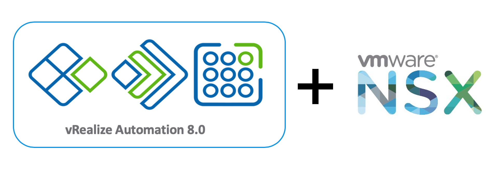

vRA 8 + NSX-T Blog Series Overview

Contents
With the recent release of vRA 8.0, I have been receiving many questions from customers about how vRA 8 can leverage NSX-T.
This blog series will focus on demonstrating how you can create vRA 8 blueprints that utilize NSX-T constructs.
Here is a list of blogs that I am planning on creating for this series (as of March 15, 2020):
- Part 1: vRA 8 Blueprint with Existing NSX-T Networks
- Part 2: vRA 8 Blueprint with On-demand Routed NSX-T Networks
- Part 3: vRA 8 Blueprint with Existing Security Groups (network profile)
- Part 4: vRA 8 Blueprint with Existing Security Groups (vRA tag)
- Part 5: vRA 8 Blueprint with Existing Security Groups (segment port tag)
- Part 6: vRA 8 Blueprint with On-demand Security Groups
- Part 7: vRA 8 Blueprint with On-demand NSX-T Load Balancer
- Part 8: vRA 8 Blueprint with On-demand NAT NSX-T Networks
Note: the list of blogs is subject to change.
I set up a nested lab to create the examples included in this blog series.
Product Versions
- vSphere 6.5 U3
- vRA 8.0.1 (including vRSLCM and vIDM)
- NSX-T 2.5.1
- vSAN 6.6.1
vSphere Infrastructure Overview
2 vSAN clusters, enabled with DRS and HA:
- Management cluster - 4 ESXi hosts
- Compute/edge cluster - 3 ESXi hosts
The management cluster hosts the following appliances:
- vCSA
- vRA appliance
- vRSLCM appliance
- vIDM appliance
- NSX-T manager
The compute/edge cluster hosts all the workloads and the NSX-T edge VMs.